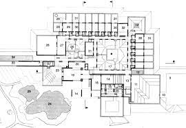
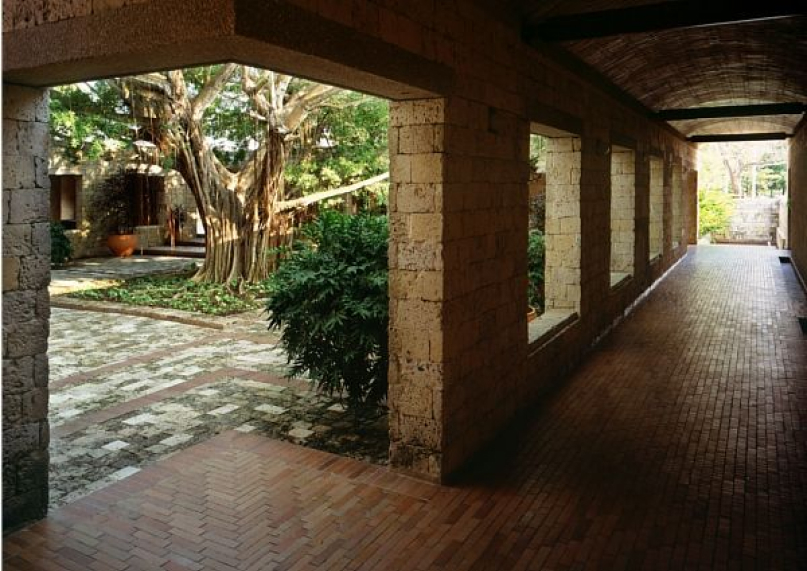

Rogelio Salmona
Proyecto
Casa de huéspedes ilustres
 
La Casa de Huéspedes de
Colombia en Cartagena de Indias
realizada en la parte de
restauración con Germán Téllez.
"Nace de un puñado de modestas
ruinas olvidadas en la bahía de
Cartagena y del interrogantebr
que se plantea al vasto
inventario patrimonial dejado
en nuestra patria durante 300
años de dominio colonial
español " .... ( Germán Téllez.
"El Fuerte de Manzanillo y la
Casa de Huéspedes de Colombia
en Cartagena ")
La Casa de Huéspedes de
Colombia es por consiguiente la
recuperación del sitio y de las
ruinas del viejo fuerte de "San
Juan de Manzanillo" incorporado
a una obra nueva; el albergue
para los huéspedes de Colombia.